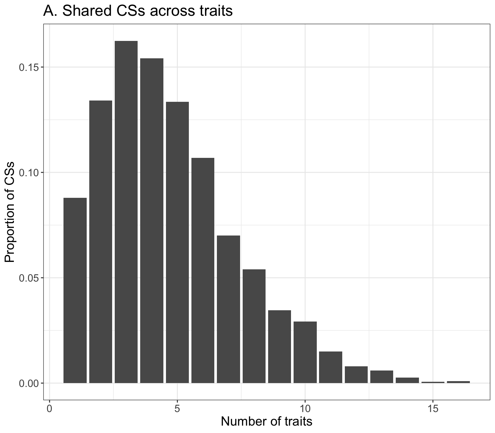
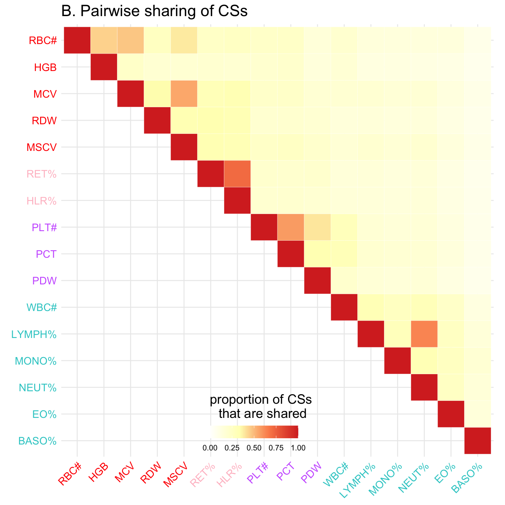
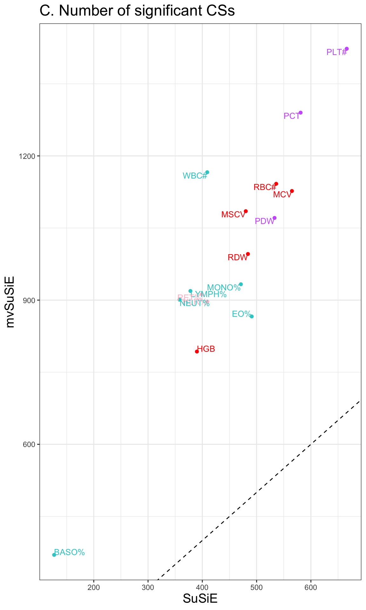
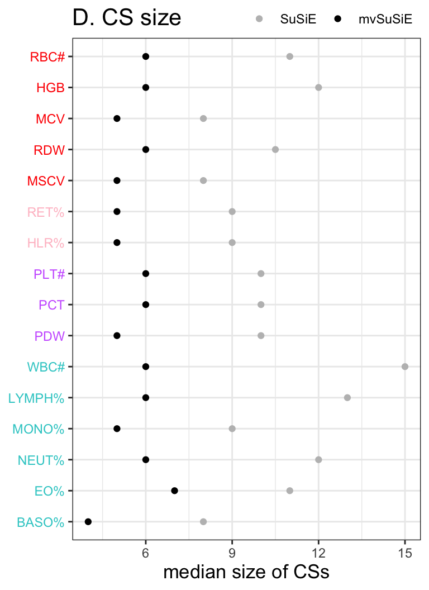

Last updated: 2022-07-20
Checks: 7 0
Knit directory: mmbr-rss-dsc/
This reproducible R Markdown analysis was created with workflowr (version 1.7.0). The Checks tab describes the reproducibility checks that were applied when the results were created. The Past versions tab lists the development history.
Great! Since the R Markdown file has been committed to the Git repository, you know the exact version of the code that produced these results.
Great job! The global environment was empty. Objects defined in the global environment can affect the analysis in your R Markdown file in unknown ways. For reproduciblity it’s best to always run the code in an empty environment.
The command set.seed(20200227) was run prior to running
the code in the R Markdown file. Setting a seed ensures that any results
that rely on randomness, e.g. subsampling or permutations, are
reproducible.
Great job! Recording the operating system, R version, and package versions is critical for reproducibility.
Nice! There were no cached chunks for this analysis, so you can be confident that you successfully produced the results during this run.
Great job! Using relative paths to the files within your workflowr project makes it easier to run your code on other machines.
Great! You are using Git for version control. Tracking code development and connecting the code version to the results is critical for reproducibility.
The results in this page were generated with repository version ee385b9. See the Past versions tab to see a history of the changes made to the R Markdown and HTML files.
Note that you need to be careful to ensure that all relevant files for
the analysis have been committed to Git prior to generating the results
(you can use wflow_publish or
wflow_git_commit). workflowr only checks the R Markdown
file, but you know if there are other scripts or data files that it
depends on. Below is the status of the Git repository when the results
were generated:
Ignored files:
Ignored: .Rhistory
Ignored: .Rproj.user/
Untracked files:
Untracked: data/analysis_20220619/
Untracked: output/analysis_20220619/
Unstaged changes:
Modified: analysis/index.Rmd
Note that any generated files, e.g. HTML, png, CSS, etc., are not included in this status report because it is ok for generated content to have uncommitted changes.
These are the previous versions of the repository in which changes were
made to the R Markdown
(analysis/ukb_bllodcells_20220619.Rmd) and HTML
(docs/ukb_bllodcells_20220619.html) files. If you’ve
configured a remote Git repository (see ?wflow_git_remote),
click on the hyperlinks in the table below to view the files as they
were in that past version.
| File | Version | Author | Date | Message |
|---|---|---|---|---|
| Rmd | ee385b9 | Yuxin Zou | 2022-07-20 | wflow_publish("analysis/ukb_bllodcells_20220619.Rmd") |
library(data.table)
library(dplyr)Warning: package 'dplyr' was built under R version 4.1.2
Attaching package: 'dplyr'The following objects are masked from 'package:data.table':
between, first, lastThe following objects are masked from 'package:stats':
filter, lagThe following objects are masked from 'package:base':
intersect, setdiff, setequal, unionlibrary(ggplot2)
regions = fread('data/analysis_20220619/region_units.txt', header = FALSE)$V1
regions_info = fread('data/analysis_20220619/regions.csv')
colnames(regions_info) = c('chr', 'start', 'end', 'length', '-log10p', 'numsnps')
regions_info$Region = paste0('bloodcells_chr', regions_info$chr, '.',
regions_info$start, '.', regions_info$end)
LD_cov = 'original'
resid_cor = 'Ycor'# mvsusie_rss
res_mvrss = fread(paste0('data/analysis_20220619/LD', LD_cov, '.', resid_cor, '.mvsusierss.CS_purity0.5.CS_lfsr0.01.summary.csv'))
res_mvrss = res_mvrss %>% arrange(CHR, POS)
## make sure the purity > 0.5 (this should not filter out any CSs, but it filters out variants with pip > 0.05, but not in any CSs)
res_mvrss = res_mvrss %>% filter(purity > 0.5)
# summary region level
res_mvrss_region = res_mvrss %>% group_by(Region) %>% summarize(CS_num = n_distinct(CS, na.rm=TRUE))
cat('number of regions with CSs \n')number of regions with CSs sum(res_mvrss_region$CS_num > 0) # 921[1] 921cat('number of CSs \n')number of CSs sum(res_mvrss_region$CS_num) # 3396[1] 3396# summary CS level
res_mvrss_CS = res_mvrss %>% select(Region, CS, purity, CS_trait) %>%
group_by(Region, CS) %>% mutate(CS_size = n()) %>% ungroup() %>% distinct()
trait = c("WBC_count", "RBC_count", "Haemoglobin", "MCV", "RDW", "Platelet_count",
"Plateletcrit", "PDW", "Lymphocyte_perc", "Monocyte_perc", "Neutrophill_perc",
"Eosinophill_perc", "Basophill_perc", "Reticulocyte_perc", "MSCV", "HLR_perc")
rename = list('WBC_count' = 'WBC#',
'RBC_count' = 'RBC#',
'Haemoglobin' = 'HGB',
'MCV' = 'MCV',
'RDW' = 'RDW',
"Platelet_count" = 'PLT#',
"Plateletcrit" = 'PCT',
"PDW" = 'PDW',
"Lymphocyte_perc" = 'LYMPH%',
"Monocyte_perc" = 'MONO%',
"Neutrophill_perc" = 'NEUT%',
"Eosinophill_perc" = 'EO%',
"Basophill_perc" = 'BASO%',
"Reticulocyte_perc" = 'RET%',
"MSCV" = 'MSCV',
"HLR_perc" = 'HLR%')
for(name in trait){
tmp = sapply(res_mvrss_CS$CS_trait, function(x){
cstrait = grep(name, x)
ifelse(length(cstrait) > 0, cstrait, 0)
})
res_mvrss_CS[ , ncol(res_mvrss_CS) + 1] <- unname(tmp)
colnames(res_mvrss_CS)[ncol(res_mvrss_CS)] <- name
}
res_mvrss_CS$CS_trait_num = rowSums(res_mvrss_CS[,6:21])
bloodcells_col = cbind(trait,
c('Compound white cell', 'Mature red cell', 'Mature red cell',
'Mature red cell', 'Mature red cell', 'Platelet', 'Platelet',
'Platelet', 'Compound white cell', 'Compound white cell',
'Compound white cell', 'Compound white cell', 'Compound white cell',
'Immature red cell', 'Mature red cell','Immature red cell'),
c('#33cccc', 'red', 'red', 'red', 'red',
'#cc66ff', '#cc66ff', '#cc66ff',
'#33cccc', '#33cccc', '#33cccc', '#33cccc', '#33cccc',
'pink', 'red', 'pink'))
res_mvrss_CS = res_mvrss_CS %>% mutate(CS_WB = WBC_count + Lymphocyte_perc + Monocyte_perc +
Neutrophill_perc + Eosinophill_perc + Basophill_perc,
CS_RB = RBC_count + Haemoglobin + MCV + RDW +
Reticulocyte_perc + MSCV + HLR_perc,
CS_RB2 = RBC_count + Haemoglobin,
CS_PL = Platelet_count + Plateletcrit + PDW)
## summary of CS size
# ggplot(res_mvrss_CS, aes(CS_size)) + geom_histogram(aes(y = ..density..), binwidth = 1) +
# labs(x = 'CS size', y = 'Proportion of CSs') + lims(x = c(1,50))
cat('median CS size \n')median CS size median(res_mvrss_CS$CS_size)[1] 7cat('number of CS size == 1 \n')number of CS size == 1 sum(res_mvrss_CS$CS_size == 1)[1] 726cat('median CS purity \n')median CS purity median(res_mvrss_CS$purity)[1] 0.974917## CS sharing
# pdf('~/Documents/GitHub/Yuxin_Thesis/mvsusie_rss/figures/ukbbloodcells_CS_traits.pdf', height = 7, width = 8)
p = ggplot(res_mvrss_CS %>% filter(CS_trait_num > 0), aes(CS_trait_num)) +
geom_bar(aes(y = ..prop.., group = 1)) +
labs(x = 'Number of traits', y = 'Proportion of CSs') + theme_bw() +
theme(axis.title = element_text(size = 15), axis.text = element_text(size = 12),
title = element_text(size=15)) +
ggtitle('A. Shared CSs across traits')
p
pdf(paste0('output/analysis_20220619/ukbbloodcells_CS_traits_LD', LD_cov, '.', resid_cor, '.pdf'), height = 7, width = 8)
p
dev.off()quartz_off_screen
2 ## pairwise sharing
get_pairwise_sharing = function(dat){
R = ncol(dat)
S = diag(R)
for(i in 1:(R-1)){
for(j in (i+1):R){
sig_i=which(dat[,i] == 1)
sig_j=which(dat[,j] == 1)
S[i,j] = length(intersect(sig_i, sig_j))/length(union(sig_i,sig_j))
}
}
S[lower.tri(S, diag = FALSE)] = t(S)[lower.tri(S, diag = FALSE)]
colnames(S) = row.names(S) = colnames(dat)
return(S)
}
dat = res_mvrss_CS[,6:21]
CS_trait_sharing = get_pairwise_sharing(dat)
colnames(CS_trait_sharing) = rownames(CS_trait_sharing) = sapply(colnames(CS_trait_sharing), function(x) rename[[x]])
trait_new_order = c("RBC#", "HGB", "MCV", "RDW", "MSCV", "RET%", "HLR%", "PLT#", "PCT", "PDW",
"WBC#", "LYMPH%", "MONO%", "NEUT%", "EO%", "BASO%")
traits_index = match(trait_new_order, colnames(CS_trait_sharing))
CS_trait_sharing = CS_trait_sharing[traits_index, traits_index]
CS_trait_sharing[lower.tri(CS_trait_sharing)] <- NA
n <- nrow(CS_trait_sharing)
melted_cormat <- reshape2::melt(CS_trait_sharing[n:1,], na.rm = TRUE)
clrs <- colorRampPalette(rev(c("#D73027","#FC8D59","#FFFFBF","#FFFFFF"
# "#FEE090", "#E0F3F8","#91BFDB","#4575B4"
)))(64)
p = ggplot(data = melted_cormat, aes(Var2, Var1, fill = value))+
geom_tile(color = "white")+ggtitle('B. Pairwise sharing of CSs') +
# scale_fill_gradient(low="white", high="red2") +
scale_fill_gradientn(colors = clrs, limit = c(0,1)) +
theme_minimal()+
coord_fixed() +
theme(
axis.title.x = element_blank(),
axis.title.y = element_blank(),
axis.text.x = element_text(color=bloodcells_col[,3][traits_index], size=12,angle=45,hjust=1),
axis.text.y = element_text(color=rev(bloodcells_col[,3][traits_index]), size=12),
title =element_text(size=15),
# panel.grid.major = element_blank(),
panel.border = element_blank(),
panel.background = element_blank(),
axis.ticks = element_blank(),
legend.justification = c(1, 0),
legend.position = c(0.6, 0),
legend.direction = "horizontal")+
guides(fill = guide_colorbar(title="proportion of CSs \nthat are shared", barwidth = 7, barheight = 1,
title.position = "top", title.hjust = 0.5))Warning: Vectorized input to `element_text()` is not officially supported.
Results may be unexpected or may change in future versions of ggplot2.
Vectorized input to `element_text()` is not officially supported.
Results may be unexpected or may change in future versions of ggplot2.p
pdf(paste0('output/analysis_20220619/ukbbloodcells_CS_sharing_LD', LD_cov, '.', resid_cor, '.pdf'), height=8, width = 8)
p
dev.off()quartz_off_screen
2 # susierss
if(LD_cov == 'original'){
res_rss = fread('data/analysis_20220619/susierss.notrem.CS_purity0.5.summary.csv')
}else{
res_rss = fread('data/analysis_20220619/susierss.rem.CS_purity0.5.summary.csv')
}
trait = c("WBC_count", "RBC_count", "Haemoglobin", "MCV", "RDW", "Platelet_count",
"Plateletcrit", "PDW", "Lymphocyte_perc", "Monocyte_perc", "Neutrophill_perc",
"Eosinophill_perc", "Basophill_perc", "Reticulocyte_perc", "MSCV", "HLR_perc")
res_rss_CS = c()
res_rss_region = c()
for(name in trait){
cat(paste0(name, '\n'))
tmp = res_rss %>% filter(trait == name)
## summary region level
tmp_region = tmp %>% group_by(trait, Region) %>% summarize(CS_num = n_distinct(CS, na.rm=TRUE))
res_rss_region = rbind(res_rss_region, tmp_region)
cat(paste0('total regions with CS: ', sum(tmp_region$CS_num > 0), '\n'))
cat(paste0('total CSs: ', sum(tmp_region$CS_num), '\n'))
## summary CS level
tmp_CS = tmp %>% filter(!is.na(CS)) %>% select(Region, trait, CS, purity) %>%
group_by(trait, Region, CS) %>% mutate(CS_size = n()) %>% ungroup() %>% distinct()
res_rss_CS = rbind(res_rss_CS, tmp_CS)
# ggplot(res_suff_wbc_CS %>% filter(CS_size < 50), aes(CS_size)) + geom_bar(aes(y = stat(count) / sum(count))) +
# labs(x = 'CS size', y = 'Proportion of CSs')
cat('summary of CS sizes \n')
print(summary(tmp_CS$CS_size))
}WBC_count`summarise()` has grouped output by 'trait'. You can override using the
`.groups` argument.total regions with CS: 300
total CSs: 409
summary of CS sizes
Min. 1st Qu. Median Mean 3rd Qu. Max.
1.00 4.00 15.00 30.76 39.00 658.00
RBC_count`summarise()` has grouped output by 'trait'. You can override using the
`.groups` argument.total regions with CS: 327
total CSs: 536
summary of CS sizes
Min. 1st Qu. Median Mean 3rd Qu. Max.
1.00 3.00 11.00 33.48 31.00 2170.00
Haemoglobin`summarise()` has grouped output by 'trait'. You can override using the
`.groups` argument.total regions with CS: 263
total CSs: 390
summary of CS sizes
Min. 1st Qu. Median Mean 3rd Qu. Max.
1.0 3.0 12.0 36.9 29.0 2159.0
MCV`summarise()` has grouped output by 'trait'. You can override using the
`.groups` argument.total regions with CS: 324
total CSs: 565
summary of CS sizes
Min. 1st Qu. Median Mean 3rd Qu. Max.
1.00 2.00 8.00 24.66 29.00 732.00
RDW`summarise()` has grouped output by 'trait'. You can override using the
`.groups` argument.total regions with CS: 278
total CSs: 484
summary of CS sizes
Min. 1st Qu. Median Mean 3rd Qu. Max.
1.00 2.00 10.50 32.44 32.00 2534.00
Platelet_count`summarise()` has grouped output by 'trait'. You can override using the
`.groups` argument.total regions with CS: 400
total CSs: 666
summary of CS sizes
Min. 1st Qu. Median Mean 3rd Qu. Max.
1.00 3.00 10.00 26.42 32.00 308.00
Plateletcrit`summarise()` has grouped output by 'trait'. You can override using the
`.groups` argument.total regions with CS: 369
total CSs: 581
summary of CS sizes
Min. 1st Qu. Median Mean 3rd Qu. Max.
1.00 3.00 10.00 25.28 31.00 287.00
PDW`summarise()` has grouped output by 'trait'. You can override using the
`.groups` argument.total regions with CS: 309
total CSs: 533
summary of CS sizes
Min. 1st Qu. Median Mean 3rd Qu. Max.
1.00 3.00 10.00 27.13 31.00 317.00
Lymphocyte_perc`summarise()` has grouped output by 'trait'. You can override using the
`.groups` argument.total regions with CS: 261
total CSs: 378
summary of CS sizes
Min. 1st Qu. Median Mean 3rd Qu. Max.
1.00 4.00 13.00 39.45 34.00 2414.00
Monocyte_perc`summarise()` has grouped output by 'trait'. You can override using the
`.groups` argument.total regions with CS: 278
total CSs: 471
summary of CS sizes
Min. 1st Qu. Median Mean 3rd Qu. Max.
1.00 2.00 9.00 22.22 28.50 410.00
Neutrophill_perc`summarise()` has grouped output by 'trait'. You can override using the
`.groups` argument.total regions with CS: 253
total CSs: 358
summary of CS sizes
Min. 1st Qu. Median Mean 3rd Qu. Max.
1.00 4.00 12.00 40.85 32.75 2327.00
Eosinophill_perc`summarise()` has grouped output by 'trait'. You can override using the
`.groups` argument.total regions with CS: 281
total CSs: 491
summary of CS sizes
Min. 1st Qu. Median Mean 3rd Qu. Max.
1.00 3.00 11.00 29.15 29.00 2159.00
Basophill_perc`summarise()` has grouped output by 'trait'. You can override using the
`.groups` argument.total regions with CS: 94
total CSs: 127
summary of CS sizes
Min. 1st Qu. Median Mean 3rd Qu. Max.
1.00 2.00 8.00 20.46 22.50 268.00
Reticulocyte_perc`summarise()` has grouped output by 'trait'. You can override using the
`.groups` argument.total regions with CS: 243
total CSs: 399
summary of CS sizes
Min. 1st Qu. Median Mean 3rd Qu. Max.
1.00 3.00 9.00 29.54 28.00 2234.00
MSCV`summarise()` has grouped output by 'trait'. You can override using the
`.groups` argument.total regions with CS: 298
total CSs: 480
summary of CS sizes
Min. 1st Qu. Median Mean 3rd Qu. Max.
1.00 2.00 8.00 26.61 29.25 1892.00
HLR_perc`summarise()` has grouped output by 'trait'. You can override using the
`.groups` argument.total regions with CS: 257
total CSs: 409
summary of CS sizes
Min. 1st Qu. Median Mean 3rd Qu. Max.
1.00 3.00 9.00 30.07 29.00 2170.00 ## CS summary
bloodcells_col = cbind(trait,
c('Compound white cell', 'Mature red cell', 'Mature red cell',
'Mature red cell', 'Mature red cell', 'Platelet', 'Platelet',
'Platelet', 'Compound white cell', 'Compound white cell',
'Compound white cell', 'Compound white cell', 'Compound white cell',
'Immature red cell', 'Mature red cell','Immature red cell'),
c('#33cccc', 'red', 'red', 'red', 'red',
'#cc66ff', '#cc66ff', '#cc66ff',
'#33cccc', '#33cccc', '#33cccc', '#33cccc', '#33cccc',
'pink', 'red', 'pink'))
res_rss_CS_size = res_rss_CS %>% group_by(trait) %>% summarise(grp.mean=mean(CS_size), grp.median = median(CS_size))
CS_compare = res_rss_region %>% group_by(trait) %>% summarize(CSnumber = sum(CS_num))
tmp = colSums(res_mvrss_CS[,6:21])
CS_compare$mvCSnumber = tmp[match(CS_compare$trait, names(tmp))]
CS_compare$type = bloodcells_col[match(CS_compare$trait, bloodcells_col[,1]),2]
CS_compare$trait = sapply(CS_compare$trait, function(x) rename[[x]])
p = ggplot(CS_compare, aes(x = CSnumber, y = mvCSnumber, color = type)) + geom_point() +
scale_color_manual(values = c('#33cccc', 'pink', 'red', '#cc66ff')) +
geom_abline(slope=1,intercept = 0, linetype=2) +
geom_text(aes(label=trait),vjust = "inward", hjust = "inward", size=3.5) +
labs(x = 'SuSiE',
y = 'mvSuSiE') + theme_bw() +
theme(legend.position = "none",
title = element_text(size=15)) +
ggtitle('C. Number of significant CSs')
p
pdf(paste0('output/analysis_20220619/ukbbloodcells_CS_num_LD', LD_cov, '.', resid_cor,'.pdf'), height=10, width = 6)
p
dev.off()quartz_off_screen
2 CS_size_compare = res_rss_CS %>% group_by(trait) %>% summarize(CSsize = median(CS_size))
tmp = apply(res_mvrss_CS[, 6:21], 2, function(x) median(res_mvrss_CS$CS_size[x==1]))
CS_size_compare$mvCSsize = tmp[match(CS_size_compare$trait, names(tmp))]
CS_size_compare$type = bloodcells_col[match(CS_size_compare$trait, bloodcells_col[,1]),2]
CS_size_compare$trait = sapply(CS_size_compare$trait, function(x) rename[[x]])
CS_size_compare = reshape2::melt(CS_size_compare)Using trait, type as id variablesWarning: attributes are not identical across measure variables; they will be
droppedCS_size_compare$variable = as.character(CS_size_compare$variable)
CS_size_compare$variable[CS_size_compare$variable == 'CSsize'] = 'SuSiE'
CS_size_compare$variable[CS_size_compare$variable == 'mvCSsize'] = 'mvSuSiE'
CS_size_compare$trait = factor(CS_size_compare$trait, levels = trait_new_order)
p = ggplot(CS_size_compare, aes(x = trait, y=value, color=variable)) + geom_point() +
ylab('median size of CSs') + theme_bw() +
ggtitle('D. CS size') +
labs(color='method') +
scale_color_manual(values = c("SuSiE" = "grey", "mvSuSiE" = "black")) +
scale_x_discrete(limits = rev(levels(CS_size_compare$trait))) +
coord_flip() +
theme(title = element_text(size=13),
axis.text.y = element_text(color = bloodcells_col[,3][rev(traits_index)]),
axis.title.y = element_blank(),
legend.position=c(1, 1.08),
legend.direction="horizontal",
legend.justification = c("right","top"),
legend.title=element_blank(),
legend.background = element_rect(fill='transparent'))Warning: Vectorized input to `element_text()` is not officially supported.
Results may be unexpected or may change in future versions of ggplot2.p
pdf(paste0('output/analysis_20220619/ukbbloodcells_CS_size_LD', LD_cov, '.', resid_cor,'.pdf'), height=5.5, width = 4)
p
dev.off()quartz_off_screen
2
sessionInfo()R version 4.1.0 (2021-05-18)
Platform: x86_64-apple-darwin17.0 (64-bit)
Running under: macOS Big Sur 10.16
Matrix products: default
BLAS: /Library/Frameworks/R.framework/Versions/4.1/Resources/lib/libRblas.dylib
LAPACK: /Library/Frameworks/R.framework/Versions/4.1/Resources/lib/libRlapack.dylib
locale:
[1] en_US.UTF-8/en_US.UTF-8/en_US.UTF-8/C/en_US.UTF-8/en_US.UTF-8
attached base packages:
[1] stats graphics grDevices utils datasets methods base
other attached packages:
[1] ggplot2_3.3.6 dplyr_1.0.9 data.table_1.14.2 workflowr_1.7.0
loaded via a namespace (and not attached):
[1] tidyselect_1.1.2 xfun_0.30 bslib_0.3.1 reshape2_1.4.4
[5] purrr_0.3.4 colorspace_2.0-3 vctrs_0.4.1 generics_0.1.2
[9] htmltools_0.5.2 yaml_2.3.5 utf8_1.2.2 rlang_1.0.2
[13] jquerylib_0.1.4 later_1.3.0 pillar_1.7.0 withr_2.5.0
[17] glue_1.6.2 DBI_1.1.2 plyr_1.8.7 lifecycle_1.0.1
[21] stringr_1.4.0 munsell_0.5.0 gtable_0.3.0 evaluate_0.15
[25] labeling_0.4.2 knitr_1.39 callr_3.7.0 fastmap_1.1.0
[29] httpuv_1.6.5 ps_1.7.0 fansi_1.0.3 highr_0.9
[33] Rcpp_1.0.8.3 promises_1.2.0.1 scales_1.2.0 jsonlite_1.8.0
[37] farver_2.1.0 fs_1.5.2 digest_0.6.29 stringi_1.7.6
[41] processx_3.5.3 getPass_0.2-2 rprojroot_2.0.3 grid_4.1.0
[45] cli_3.3.0 tools_4.1.0 magrittr_2.0.3 sass_0.4.1
[49] tibble_3.1.7 crayon_1.5.1 whisker_0.4 pkgconfig_2.0.3
[53] ellipsis_0.3.2 assertthat_0.2.1 rmarkdown_2.14 httr_1.4.3
[57] rstudioapi_0.13 R6_2.5.1 git2r_0.30.1 compiler_4.1.0